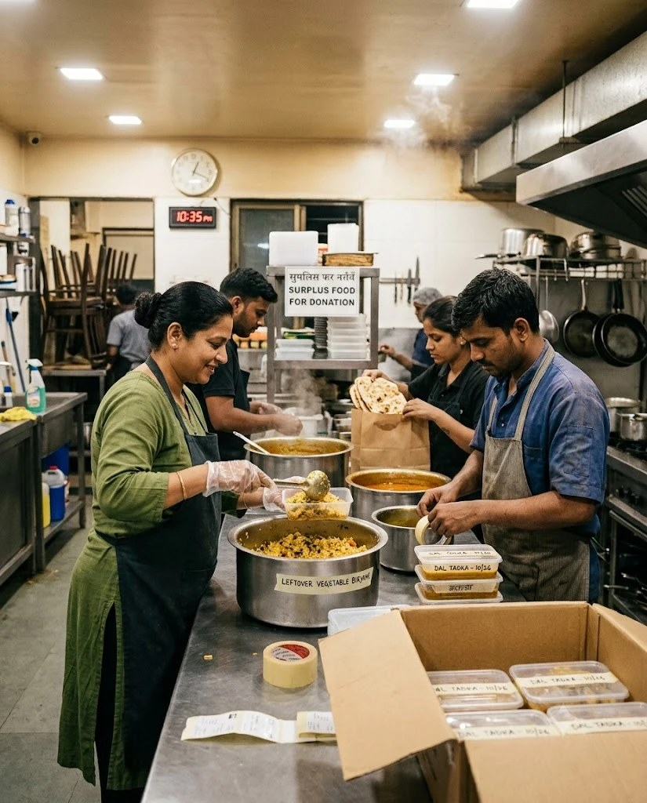
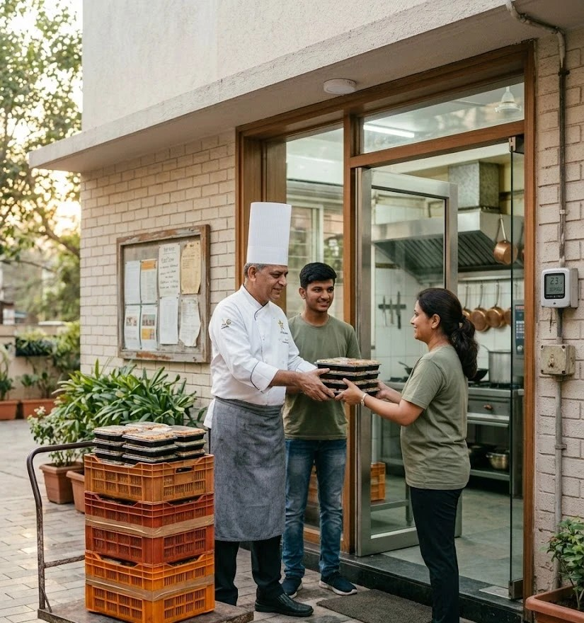

What is FoodLoop?
Every night, restaurants, college canteens and banquet halls in Mumbai have good food left over. At the same time, shelters and community kitchens nearby need meals. FoodLoop connects them. A kitchen posts its leftover food with a pickup deadline, and FoodLoop offers it to the nearby organisation that can collect it before the deadline.

Kitchen staff packing leftover food at closing time.
How it works
- A kitchen (donor) posts the food, the quantity and the pickup deadline.
- FoodLoop gives every nearby shelter (recipient) a score and ranks them.
- The top-ranked shelter gets the offer and has 10 minutes to reply. If they pass or do not reply, the rest are scored again with the time left and the best one is asked next.
- The shelter that accepts gets a 4-digit handover code. Its own staff collect the food and show the code; the kitchen types it in to confirm. No delivery rider is needed.

Shelter staff collect the food and show their handover code at the kitchen.
How the score is calculated
| Factor | Weight | Meaning |
|---|---|---|
| Time | 35% | Can they reach the kitchen before the deadline? |
| Distance | 25% | How close are they? |
| Capacity | 20% | Do they have room for this much food? |
| Food type | 10% | Do they accept veg / non-veg? |
| Reliability | 10% | Did they collect on time before? |
FoodLoop so far
Counted live from the database every time this page opens.
Loading...
See the full impact: daily meals, top kitchens and shelters →
Who can use it?
- Donors: restaurants, hotels, canteens, caterers, banquet halls
- Recipients: NGOs, shelters, orphanages, old-age homes, community kitchens